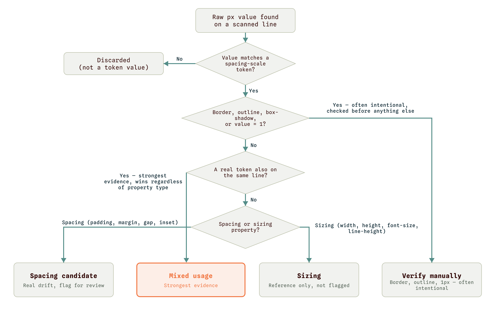
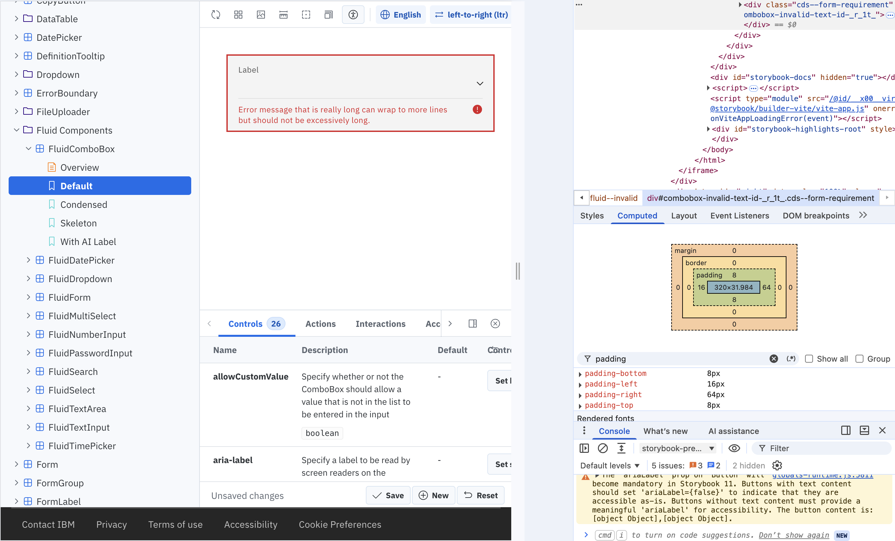
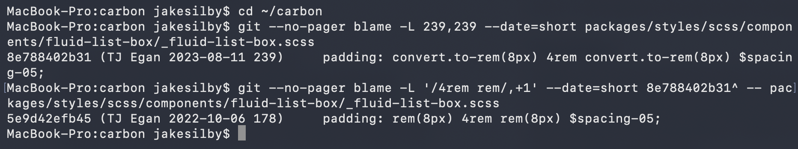
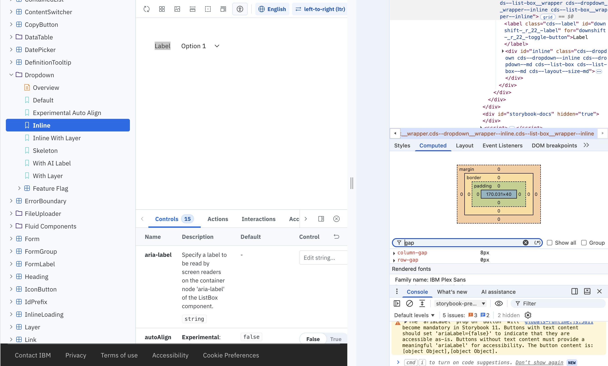
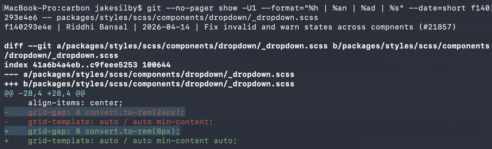

Personal project
I directed Claude Code to build a script that finds hardcoded spacing values in IBM's Carbon design system. I checked three of the lines it flagged. Two were real drift, confirmed in Storybook and git history. The third was a false positive from my own tool.
Design systems document their token scale. Nothing stops a contributor from typing 48px instead of reaching for $spacing-09. Both render identically. The drift stays invisible until someone goes looking for it, and eyeballing a codebase with hundreds of component files doesn't scale.
I wanted to know how much of that drift shows up in a real, mature design system running in production. I picked Carbon, IBM's open-source design system, because it's large, widely used, and still under active development.
A token scale only holds its value when teams actually reference it. Every raw pixel value that happens to match a token is a missed connection. You update $spacing-03 expecting every 8px gap in the product to move with it, then find a handful of components that never referenced the token at all. The gap shows up later, mid-redesign or during an accessibility pass, after it has already cost someone time.
Reviewing SCSS by hand for this is slow and unreliable. A script can flag candidates quickly, and a person confirms each one. I built the project around that split.
I had Claude Code build a Python script, token_drift_finder.py, that scans Carbon's SCSS for raw pixel values and checks each one against the published spacing scale ($spacing-01 through $spacing-10, 2px to 64px). A raw value matching a token gets flagged as a candidate. The script only flags. I checked every finding on this page myself.
The first version treated every matching property the same way. Wrong. Design systems reuse the same numeric scale for both spacing (padding, margin, gap) and sizing (width, height, font-size, line-height) on purpose, so a 40px button height matching $spacing-08 is just the scale doing its job. The classifier now splits the two apart:

I ran the script against a clone of Carbon's main branch as of September 15, 2026 (commit a497938ff2), across the SCSS files under packages/ (about 1,300, before the script skips tests, examples and build output). It turned up 19 mixed-usage candidates, 166 spacing candidates, 322 sizing matches, and 868 border, outline and 1px entries to verify manually. I didn't trust the output on its own. A tool that flags things can still be wrong. I picked two candidates from different files and components, and checked each one three separate ways: the source declaration, a live render in Carbon's own Storybook, and the commit history behind the line. A third line, from the mixed-usage bucket, turned out to be a false positive, so the 19 are less solid than they look.
The flagged line, in packages/styles/scss/components/fluid-list-box/_fluid-list-box.scss:
padding: convert.to-rem(8px) 4rem convert.to-rem(8px) $spacing-05;This is the padding on the validation message that appears under a Fluid ComboBox when it's in an invalid or warning state. The left value correctly references $spacing-05. The top and bottom values are hardcoded 8px, the same value as $spacing-03. The 4rem in the middle is raw too, and equals $spacing-10.
Source code. A token and a raw matching value, sitting side by side in the same line.
Live render. I built the package, ran Carbon's own Storybook locally, set a Fluid ComboBox to its invalid state, and inspected the rendered validation message in DevTools. Computed padding: 8px 64px 8px 16px. Confirms this rule is live in Carbon's source at the commit I scanned.

Commit history. Plain git blame on the line points to a 2023 commit, but that commit is a bulk rename of Carbon's rem() function to to-rem() across dozens of files. It reformatted the line without writing it. Blaming the file as it stood just before the rename shows the real origin: the October 2022 commit that implemented FluidDropdown, where the line read padding: rem(8px) 4rem rem(8px) $spacing-05;. The raw 8px and the $spacing-05 token were typed into the same declaration on the same day. That makes it an inconsistency at the point of authorship.

The second flagged line, in packages/styles/scss/components/dropdown/_dropdown.scss:
grid-gap: 0 convert.to-rem(8px);This sits on .cds--dropdown__wrapper--inline, the wrapper that lays out the inline variant of Dropdown, where the label and the field sit side by side instead of stacked. The 8px controls the horizontal gap between them, hardcoded rather than referencing $spacing-03.
Source code. A single, standalone raw value on a spacing property. No token anywhere in the declaration. The property itself, grid-gap, already settles whether this is spacing or sizing, so nothing neighboring is needed to prove intent.
Live render. In Storybook, I opened Dropdown's Inline story, selected the wrapper element in DevTools, and confirmed the computed values: column-gap: 8px and row-gap: 0px. Chrome splits the grid-gap shorthand into those two longhands in its Computed tab, and the Styles tab still shows the authored grid-gap: 0 0.5rem. Same number as the source. The rule is live.

grid-gap: 0 0.5rem.Commit history. Git blame attributes the line to a 13-file commit from April 14, 2026, fixing invalid and warn states across components. The diff shows what that commit did to the line: the grid-gap declaration already existed, and the commit changed the value from convert.to-rem(24px) to convert.to-rem(8px). Neither value used a token. 24px matches $spacing-06 and 8px matches $spacing-03. So someone edited this exact value in April 2026 and still didn't reach for the token, in a system with a well-documented spacing scale.

The two findings sit in different components, were written by different people in different years, and both survived the same three-layer check. Two examples can't establish a rate. They do show the drift in both old and new code.
Not every flagged line held up. The script's strongest bucket, "mixed usage," also caught this line in _tabs.scss:
line-height: calc(#{convert.to-rem(48px)} - (#{$spacing-03} * 2));On the surface it looks like the same pattern: a raw 48px next to a real token. Look closer and it's a formula. A 48px-tall tab minus 16px of vertical padding ($spacing-03 times two, top and bottom) computes a 32px line-height so the label centers correctly. The raw 48px references the component's total height and feeds directly into that calculation.
I caught this one in the output and raised it with Claude Code. The bug was in the classifier. It flagged any line with a nearby token as strongest evidence, even when the raw value sat on a sizing property it was supposed to treat as expected reuse. The sizing carve-out for the simple case didn't survive a raw value and a token showing up in the same computed expression.
I'm leaving this one in because a tool with zero false positives usually means nobody looked hard enough at its output.
So how much drift is there? I can't put a number on it yet. The script flagged 185 spacing and mixed-usage lines. I've checked three, and one of those was my tool's mistake. The next pass works through the remaining mixed-usage bucket first, since it's the smallest group, then fixes the classifier's sizing-property gap so a rerun doesn't repeat that false positive. I haven't reported either finding to the Carbon team. If I do, I want a larger sample behind the report first, so it doesn't rest on two examples.
If I owned a system like this, I'd want an automatic check on every proposed code change that flags a raw pixel value matching a token. A reviewer would see it before it ships, long before anyone ran an audit.